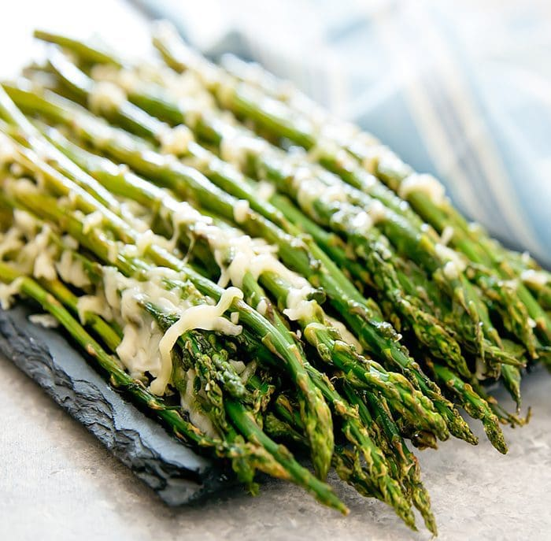

Paramesan Asparagus Recipe

Description
Fresh asparagus spears are simply seasoned with garlic, topped with shredded Parmesan cheese
Ingredients
- olive oil cooking spray
- 1 pound fresh asparagus, tough ends trimmed
- ¼ cup shredded Parmesan cheese
- 1 teaspoon sea salt
- ¼ teaspoon garlic powder to taste
Steps
- Preheat oven to 400 degrees F
- Spray the inside of a 9x13 casserole dish with olive oil cooking spray. Place asparagus in the dish and lightly spray spears with cooking spray.
- Sprinkle asparagus with Parmesan cheese, sea salt, and garlic powder.
- Roast in preheated oven until fork easily punctures thickest part of stem, about 12 minutes.